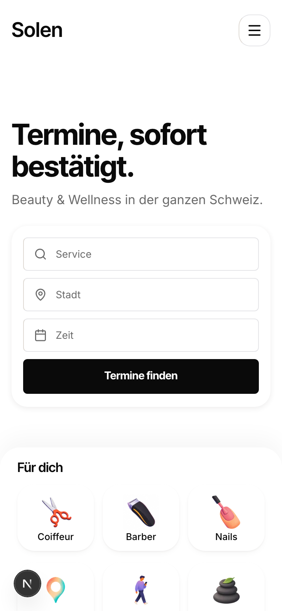
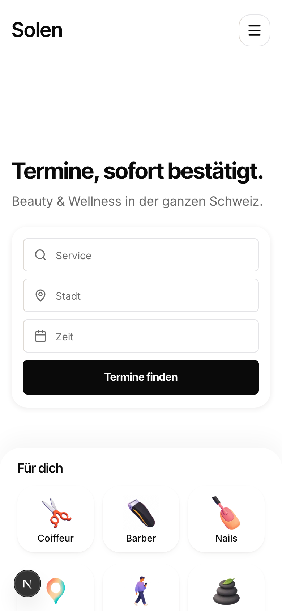
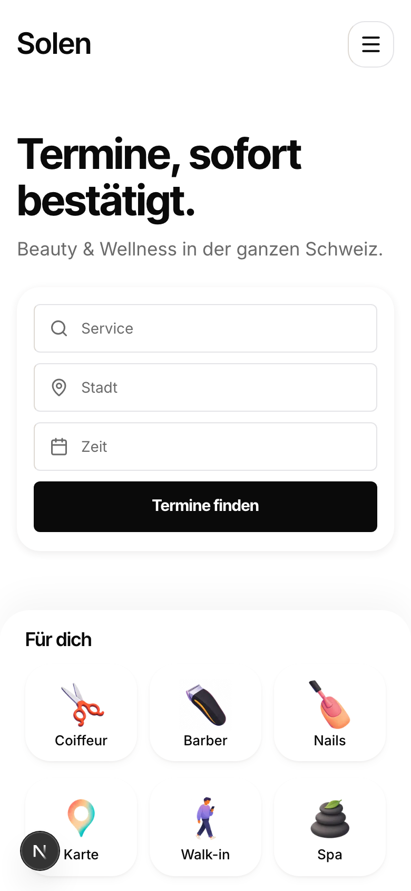

How far down should the search card sit?
Every frame is exactly one phone screen (390 x 844). The dashed line is the true middle; the dot marks the centre of the search card. The first frame is the reference you named, its real homepage at the same size, captured live this turn. The rest are your real homepage, unredrawn, with only the hero's headline size and top padding changed.
What the reference actually does, measured, and it is not what I assumed
Their search card sits at 56.2 percent of the first screen, i.e. lower than the version you just rejected (53 percent). So the position was never the problem. The problem was how I reached it: I centred the whole hero, which pushed everything else off the screen and left dead air where the page used to show what comes next.
They never buy that position with air. Their headline is 40px over two lines (88px tall); yours is 31px on one line (34px tall). Their sub-line runs three lines; yours runs one. That type difference alone is 96px, and 96px is almost exactly the distance between your card and theirs. Their card sits low because the type above it is big, not because there is padding above it.
And their first screen still shows the bottom: the next section's headline crosses the fold at 98 percent. Card low AND bottom visible at the same time. That is the recipe you asked for.




The numbers, measured live this turn
| Option | Headline | Space above headline | Card centre | Category cards | Bottom of the screen | Page |
|---|---|---|---|---|---|---|
| the reference | 40px, 2 lines | 64 | 56.2% | - | next headline pokes 16px | 5827 |
| a, today | 31px, 1 line | 40 | 40.6% | 68% | row fully visible, next headline at 96% | 4281 |
| f, the same recipe | 40px, 2 lines | 80 | 51.7% | 79% | second row cut by the fold | 4376 |
| d, air only | 31px, 1 line | 136 | 51.9% | 79% | second row cut by the fold | 4376 |
| e, type only | 40px, 2 lines | 40 | 47.0% | 74% | second row cut by the fold | 4336 |
Why f is marked: d and f put the card in the same place and give the same bottom, so the only real question is what pays for the drop. In d it is 136px of nothing. In f it is the headline, which is the lever the reference itself uses, and 40px happens to be their exact size. The rhythm below the hero is untouched in every variant: the 32px cadence still runs, and the page grows by 95px, a quarter of what the centred version cost.